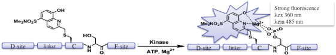
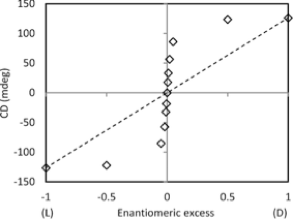

Research in the Anslyn Group
Broadly speaking, our group focuses on physical organic and supramolecular chemistry. Using mechanistic insights and knowledge of photophysics, we devise sensing systems for real-life applications. In particular, we create rapid screening assays for enantiomeric excess, diastereomeric excess, and reaction yield, as a means of facilitating reaction discovery in catalytic asymmetric induction. In addition, our analytical efforts involve the area of differential sensing, where an array of cross-reactive sensors are used to create patterns that are diagnostic of individual analytes or the consistency of complex mixtures. The current focus is on the classification of kinase activity in cells, and the potential to rapidly screen kinase inhibitors in a parallel fashion. Very recently, our group has delved into the area of reversible covalent bonding, creating a suite of reactions that an all occur simultaneously in the same solution with no crossover between them. We are exploiting these reactions for material applications, polymer synthesis, complex assembly formation, and self-replicating oligomers. Finally, we have active collaborations with the Ellington and Marcotte groups for generating sequence defined polymers and single molecule peptide sequencing routines.




